전자계산기제어산업기사(구) (2004-05-23 기출문제)
1과목: 프로그래밍일반
1. 시스템 타이머에서 일정한 시간이 만료된 경우나 오퍼레이터가 콘솔상의 인터럽트 키를 입력한 경우 발생하는 인터럽트는?
- 입/출력 인터럽트
- 외부 인터럽트
- SVC 인터럽트
- 프로그램 검사 인터럽트
(정답률: 알수없음)

2. C 언어에서 저장클래스를 명시하지 않은 변수는 기본적으로 어떤 변수로 간주되는가?
- global
- extern
- auto
- local
(정답률: 알수없음)
3. 수식에서의 순서제어 중 다음 설명에 해당하는 표기법은?
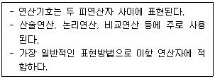
- 중위(infix) 표기법
- 전위(prefix) 표기법
- 후위(postfix) 표기법
- 혼합(mixed-fix) 표기법
(정답률: 알수없음)
4. 바인딩 시간의 종류와 무관한 것은?
- 실행 시간(execution time)
- 번역시간(translation time)
- 언어 정의 시간
- 프로그램 로드 시간
(정답률: 알수없음)
5. 단항 연산자(unary) 연산에 해당하지 않는 것은?
- move
- and
- complement
- shift
(정답률: 알수없음)
6. 구문 분석기가 올바른 문장에 대해 그 문장의 구조를 트리로 표현한 것을 의미하는 것은?
- 구문 트리
- 분석 트리
- 구조 트리
- 파스 트리
(정답률: 알수없음)
7. 독자적으로 번역된 여러 개의 목적 프로그램과 프로그램에서 사용되는 내장 함수들을 하나로 모아서 컴퓨터에서 실행될 수 있는 실행 프로그램을 생성하는 프로그램은?
- operating system
- interpreter
- linkage editor
- loader
(정답률: 알수없음)
8. 스트림 자료 활용의 예가 많은 언어는?
- COBOL
- Ada
- C
- SNOBOL 4
(정답률: 알수없음)
9. C 언어에서 사용하는 기본적인 데이터 형이 아닌 것은?
- char
- short
- integer
- double
(정답률: 알수없음)
10. 주기억장치 관리 기법 중 배치(placement) 전략에서 입력된 작업을 가장 큰 공백에 배치하는 전략은?
- best-fit
- worst-fit
- first-fit
- large-fit
(정답률: 알수없음)
11. 교착상태의 필요조건에 해당하지 않는 것은?
- 상호 배제 조건(mutual execlusion)
- 대기 조건(wait)
- 환형 대기 조건(circular wait)
- 중단 조건(preemption)
(정답률: 알수없음)
12. 로더의 기능에 해당하지 않는 것은?
- 할당(allocation)
- 링킹(linking)
- 번역(compile)
- 로딩(loading)
(정답률: 알수없음)
13. 운영체제의 제어 프로그램 중 다음 설명에 해당하는 것은?
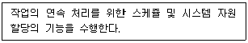
- 서비스(service) 프로그램
- 감시(supervisor) 프로그램
- 데이터 관리(data management) 프로그램
- 작업 제어(job control) 프로그램
(정답률: 알수없음)
14. C 언어의 제어구조(control structure)에서 문장을 실행한 다음, 조건을 검사하여 반복 실행의 여부를 결정하는 문은?
- for 문
- while 문
- do - while 문
- switch - case 문
(정답률: 알수없음)
15. C 언어에서 비트 단위 논리 연산자의 종류에 해당되지 않는 것은?
- ∧
- ∼
- &
- ?
(정답률: 알수없음)
16. 객체지향언어(Object-Oriented Programming Language)에서 하나 이상의 유사한 객체(object)들을 묶어서 하나의 공통된 특성으로 표현한 것을 무엇이라 하는가?
- 클래스(class)
- 행위(behavior)
- 사건(event)
- 메시지(message)
(정답률: 알수없음)
17. 프로그램을 구성하는 함수에서 전역 변수를 사용하여 함수의 결과를 반환하는 경우, 함수에 전달되는 입력 파라미터의 값이 같아도 전역 변수의 상태에 따라 함수에서 반환되는 값이 달라질 수 있는 현상을 무엇이라 하는가?
- reference
- side effect
- aliasing
- recursive
(정답률: 알수없음)
18. 프로그래머가 직접 제어를 표현하지 않았을 경우, 그 언어에서 미리 정해진 순서에 의해 제어가 이루어지는 순서제어는?
- 구조적
- 명시적
- 묵시적
- 문장 수준
(정답률: 알수없음)
19. 프로그램에서 변수들이 갖는 속성이 완전히 결정되는 시간을 무엇이라 하는가?
- 컴파일 시간(Compile time)
- 바인딩 시간(Binding time)
- 실행 시간(Run time)
- 로드 시간(Load time)
(정답률: 알수없음)
20. 서브루틴 호출(subrutine call) 처리 작업시 복귀주소를 저장하고 조회하는 용도에 적합한 자료 구조는?
- 데크
- 큐
- 스택
- 연결리스트
(정답률: 알수없음)
2과목: 전자계산기구조
21. 다음 ( )안에 알맞는 것은?
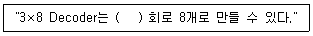
- NOR
- OR
- NAND
- AND
(정답률: 알수없음)
22. 인스트럭션 수행 시 유효 주소를 구하기 위한 메이저 상태를 무엇이라 하는가?
- FETCH 메이저 상태
- EXECUTE 메이저 상태
- INDIRECT 메이저 상태
- INTERRUPT 메이저 상태
(정답률: 알수없음)
23. 디스켓의 표면이 18sector 구역으로 나누어져 있고, 1면에 40개의 트랙을 사용할 수 있다면, 이 디스크에는 총 몇 kbyte를 저장할 수 있는가? (단, 각 sector당 저장 능력은 500byte 이다.)
- 480
- 510
- 640
- 720
(정답률: 알수없음)
24. 다음과 같은 마이크로 동작에 해당하는 인스트럭션은?
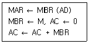
- AND
- STA
- BSA
- LDA
(정답률: 알수없음)
25. 에러 검출과 자동 정정이 가능한 코드는?
- Gray 코드
- ASCII 코드
- 8421 코드
- Hamming 코드
(정답률: 알수없음)
26. 임의 접근(random access)이 가능하지 않은 것은?
- 자기 테이프(magnetic tape)
- 자기 드럼(magnetic drum)
- 자기 디스크(magnetic disk)
- 자기 코어(magnetic core)
(정답률: 알수없음)
27. 기억장치 내에 있는 내용을 이용하여 데이터를 찾을 수 있는 기억장치는?
- Main 기억장치
- Virtual 기억장치
- Auxiliary 기억장치
- Associative 기억장치
(정답률: 알수없음)
28. 명령어 주기에 속하지 않는 것은?
- Fetch cycle
- direct cycle
- indirect cycle
- execution cycle
(정답률: 알수없음)
29. 연산의 실행을 위해서 언제나 스택(Stack) 영역에 접근해야 하는 어드레스 방식은?
- 0 어드레스 방식
- 1 어드레스 방식
- 2 어드레스 방식
- 3 어드레스 방식
(정답률: 알수없음)
30. 다음 Interrupt 중 가장 우선 순위가 높은 것은?
- Program Interrupt
- I/O Interrupt
- Paging Interrupt
- Power Failure Interrupt
(정답률: 알수없음)
31. 다음 코드 중 그 특성이 다른 것은?
- BCD
- 2421
- Excess-3
- ASCII
(정답률: 알수없음)
32. 8진수 265를 16진수로 나타내면?
- D5
- C3
- A5
- B5
(정답률: 알수없음)
33. 어느 자료의 일부분 또는 자료 전체를 지울 때 사용하는 연산은?
- Move
- AND
- OR
- Complement
(정답률: 알수없음)
34. 연산의 중심이 되는 레지스터는?
- 인덱스 레지스터
- 데이터 레지스터
- 명령 레지스터
- 누산기 레지스터
(정답률: 알수없음)
35. 데이터 전송 명령어가 아닌 것은?
- LD
- OUT
- POP
- INC
(정답률: 알수없음)
36. 32 × 16 RAM을 구성하기 위해서는 4 × 4 RAM 칩 몇 개가 필요한가?
- 16개
- 32개
- 40개
- 64개
(정답률: 알수없음)
37. 음수를 표시하는 방법이 아닌 것은?
- 1의 보수(1'S Complement)
- 부호 및 크기(Signed Magnitude)
- 2의 보수(2'S Complement)
- 10의 보수(10'S Complement)
(정답률: 알수없음)
38. 논리 게이트와 결선 회로만으로 만든 회로를 무엇이라 하는가?
- 플립플롭
- D-래치
- 순서논리회로
- 조합논리회로
(정답률: 알수없음)
39. 그레이 코드 10111을 2진수로 변환한 것은?
- 11000
- 11010
- 11011
- 11001
(정답률: 알수없음)
40. 상대 주소 지정 방식(relative addressing mode)에 가장 많이 쓰이는 명령어는?
- 분기 명령어
- 전달 명령어
- 감산 명령어
- 입·출력 명령어
(정답률: 알수없음)
3과목: 마이크로전자계산기
41. 스택(Stack)과 관계없는 것은?
- PUSH
- POP
- Stackpointer
- FIFO
(정답률: 알수없음)
42. 1대의 처리장치로 복수의 프로그램을 병행하여 실행하는 프로그램은?
- 멀티플렉싱
- 시스템 프로그래밍
- 멀티프로그래밍
- 재배치 프로그램
(정답률: 알수없음)
43. 다음 중 시스템 소프트웨어가 아닌 것은?
- 운영체제(Operating System) 프로그램
- 라이브러리(Library) 프로그램
- 언어처리(Language) 프로그램
- 응용(Application) 프로그램
(정답률: 알수없음)
44. 다음 용어 설명 중 옳지 않은 것은?
- MAR(Memory Address Register)은 READ하거나 WRITE 될 정보의 번지를 일시적으로 부여한다.
- DMA(Direct Memory Access)는 정보를 메모리에 READ/WRITE 할 때 그 기억장소를 일시적으로 기억한다.
- MDR(Memory Data Register)은 정보를 READ/WRITE 할 때 그 정보 자체를 일시적으로 저장한다.
- RAM(Random Access Memory)은 READ/WRITE를 모두 할 수 있는 메모리이다.
(정답률: 알수없음)
45. 오퍼레이팅 시스템에서 제어 프로그램에 속하는 것은?
- 어셈블러
- 서브루틴
- 컴파일러
- 데이터 관리 프로그램
(정답률: 알수없음)
46. 마이크로컴퓨터 내부에서는 3 종류의 버스(BUS)를 사용하고 있다. 버스의 형태에 속하지 않는 것은?
- Address Bus
- Control Bus
- Data Bus
- System Bus
(정답률: 알수없음)
47. 마이크로 컴퓨터의 입·출력 시스템 구성으로 적당하지 않은 것은?
- 입·출력 제어회로
- 인터페이스 회로
- 함수연산회로
- 입·출력장치
(정답률: 알수없음)
48. 큐(Queue) 메모리에 대한 설명 중 옳지 않은 것은?
- LIFO(Last-in First-out) 메모리라고도 한다.
- FIFO(First-in First-out) 메모리라고도 한다.
- 처리할 수 있는 정보의 양은 큐의 용량을 초과하지 못한다.
- 두장치 사이의 Data 전송 속도 차이를 해소하기 위하여 사용된다.
(정답률: 알수없음)
49. 입·출력 기능에 포함되지 않는 것은?
- 제어 기능
- 변환 기능
- 전송 기능
- 연산 기능
(정답률: 알수없음)
50. 모니터(monitor) 프로그램 용으로 적합한 메모리는?
- EPROM
- RAM
- mask ROM
- DRAM
(정답률: 알수없음)
51. 채널 입·출력 인스트럭션에 의해 입·출력되는 n개의 채널 명령어 모임을 채널 프로그램이라 하는데 이 채널프로그램이 기억되는 형식은?
- 스택(stack)
- 큐(queue) 리스트
- 링크드(linked) 리스트
- 순차(sequential) 리스트
(정답률: 알수없음)
52. 명령에 의하여 데이터를 블록(block) 단위로 이동할 수 있도록 하는 하드웨어 장치는?
- dual-bus 장치
- DMA(direct memory access) 장치
- DAT(dynamic address translation) 장치
- UART(universal asynchronous receive-transmitter) 장치
(정답률: 알수없음)
53. 입·출력 데이터 전송을 메모리에서의 데이터 전송과 같은 명령으로 수행할 수 있는 입·출력 제어 방식은?
- isolated I/O방식
- interrupt I/O방식
- programmed I/O방식
- memory-mapped I/O방식
(정답률: 알수없음)
54. 컴퓨터가 어느 정도의 시간동안 모은 정보를 일정량 혹은 일정기간의 데이터(Data)로 종합한 후 일괄하여 처리하는 방법을 무엇이라고 하는가?
- Remote 처리
- Virtual 처리
- Batch 처리
- On-line 처리
(정답률: 알수없음)
55. 스택(stack) 구조의 컴퓨터에서 ADD나 MUL 등의 명령에 사용하는 주소 방식은?
- three-address
- two-address
- one-address
- zero-address
(정답률: 알수없음)
56. 어떤 메모리가 4K × 8의 용량을 가지고 있으며, word size가 8일 때 이 메모리를 모두 지정하기 위한 어드레스선(address line)의 수는?
- 8 비트
- 10 비트
- 12 비트
- 16 비트
(정답률: 알수없음)
57. 비동기 데이터 전송인 스트로브(strobe) 제어 방식의 설명으로 옳지 않은 것은?
- 전송 시각을 맞추기 위해 하나의 제어선을 갖는다.
- 스트로브는 송신 또는 수신장치에서 발생할 수 있다.
- 데이터 버스와 두 개의 제어선을 이용하는 방식이다.
- 마이크로프로세서에서 메모리와 CPU 사이의 데이터 전송에 사용된다.
(정답률: 알수없음)
58. 다음 설명과 관계있는 것은?
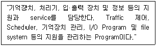
- Operating system
- Compiler
- Macro Processor
- Loader
(정답률: 알수없음)
59. 제어점(control point)에 대한 설명 중 옳지 않은 것은?
- 레지스터의 in-gate와 out-gate를 말한다.
- 4비트 레지스터의 경우 4개의 제어점이 존재한다.
- 서로 다른 제어 신호를 가하여야 하는 제어점을 독립제어점이라 한다.
- 보통 하나의 레지스터에는 입력과 출력 단자에 각각 두 개의 독립 제어점이 존재한다.
(정답률: 알수없음)
60. 프로그램 카운터가 명령의 번지부분과 더해져서 유효번지가 결정되는 주소지정 방식(Addressing Mode)은?
- 상대주소 지정방식
- 절대주소 지정방식
- 직접주소 지정방식
- 간접주소 지정방식
(정답률: 알수없음)
4과목: 논리회로
61. 순차회로에 대한 설명 중 옳지 않은 것은?
- 플립플롭은 1비트를 저장한다.
- 플립플롭의 집합은 레지스터를 구성한다.
- 조합회로에 논리게이트를 포함하면 순차회로이다.
- 플립플롭은 2진정보를 저장하고, 게이트는 그것을 제어한다.
(정답률: 알수없음)
62. 전가산기의 회로에서 합을 구하는 논리식은? (단, 입력은 A, B이고 Ci는 바로 전 bit 단에서 발생된 자리올림 수이다.)
- (A⊕B)Ci
- (A⊙B)⊙Ci
- (A⊕B)⊙Ci
- (A⊕B)⊕Ci
(정답률: 알수없음)
63. 16bits를 1word로 하는 code에서 op-code로 6bit를 사용하면 몇가지 instruction이 가능한가?
- 30
- 32
- 64
- 128
(정답률: 알수없음)
64. 논리식
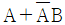
를 간단히 하면?- A+B
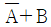
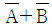
- A
(정답률: 알수없음)
65. 2진수 1000을 등가인 Gray 코드로 바꾸면?
- 0011
- 1100
- 1111
- 0000
(정답률: 알수없음)
66. 논리식 중 성립되지 않는 것은?
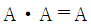
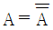
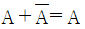
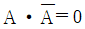
(정답률: 알수없음)
67. 디코더의 주 구성회로의 조합은?
- NOT 회로
- OR 회로
- AND 회로
- NOR 회로
(정답률: 알수없음)
68. 아래 표는 D-FF의 진리표이다. Qn+1의 상태는?
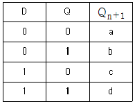
- a:0, b:0, c:0, d:0
- a:0, b:0, c:0, d:1
- a:0, b:1, c:0, d:1
- a:0, b:0, c:1, d:1
(정답률: 알수없음)
69. 2 × 4 해독기의 논리식으로 옳지 않은 것은?
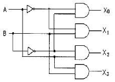
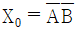
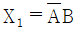
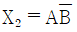
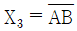
(정답률: 알수없음)
70. 그림과 같은 논리회로를 간소화한 회로는?
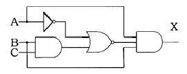
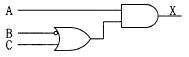
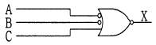
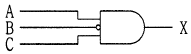
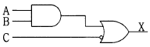
(정답률: 알수없음)
71. 두 입력 A, B를 비교하여 출력(Y)을 발생하는 회로의 논리식으로 옳지 않은 것은?
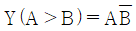
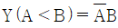
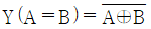
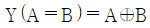
(정답률: 알수없음)
72. 시프트 레지스터의 특징으로 옳지 않은 것은?
- 플립플롭의 연결 구조가 직렬
- 모든 플립플롭은 공통으로 연결된 클럭 입력을 사용
- 레지스터에 저장된 2진 정보를 이동시킬 수 있는 레지스터
- 본질적으로 클럭 펄스에 따라 미리 정해진 순서대로 상태를 변화시키는 레지스터
(정답률: 알수없음)
73. NOT Gate에 대한 설명으로 옳은 것은?
- 입력이 1일 때 출력이 0이다.
- 두 입력이 모두 1일 때 출력이 1이다.
- 두 개의 입력이 서로 같지 않을 때만 출력이 1이다.
- 두 입력 중 어느하나의 입력이 1일 때 출력이 0이다.
(정답률: 알수없음)
74. 다음 표는 R-S 플립플롭의 여기표(excitation table)이다. A, B, C, D는 각 각 어떻게 표시되는가? (단, d는 don't care이다.)
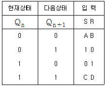
- A=0, B=0, C=d, D=d
- A=1, B=0, C=0, D=1
- A=d, B=0, C=0, D=d
- A=0, B=d, C=d, D=0
(정답률: 알수없음)
75. 십진수 (110)10을 BCD 코드로 변환한 값은?
- 001000100000
- 000100010000
- 000000010000
- 000100100000
(정답률: 알수없음)
76. JK Flip-Flop에서 J=K=High 일 때 CP가 인가되면 Q는?
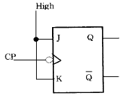
- 불변
- 0
- 1
- Toggle
(정답률: 알수없음)
77. 다음 Counter의 명칭은?
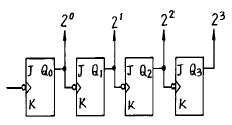
- 비동기식 15진 업카운터
- 비동기식 16진 업카운터
- 동기식 15진 업카운터
- 동기식 16진 업카운터
(정답률: 알수없음)
78. 다음 진리표(truth table)를 간략히 한 결과 Y는?
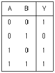
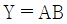
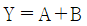
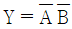
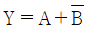
(정답률: 알수없음)
79. 4×1 멀티플렉서에서 선택선의 수(數)가 몇 개이면 이상적인가?
- 1
- 2
- 3
- 4
(정답률: 알수없음)
80. 컴퓨터에서 보수를 사용하는 이유는?
- 가산의 결과를 체크하기 위한 법
- 승산에서 연산 과정을 간단히 하기 위한 법
- 감산에서 보수를 가산법으로 처리하기 위한 법
- 제산에서의 불필요한 과정을 제거시키기 위한 법
(정답률: 알수없음)
5과목: 정보통신개론
81. 동일 건물이나 인접한 건물에 있는 다양한 컴퓨터 기기(PC, 프린터 등)들을 상호 연결하여 정보통신망에 연결된 다른 기기나 주변기기들과 공유할 수 있도록 설계한 네트워크 종류는?
- 패킷교환망(PSDN)
- 부가가치통신망(VAN)
- 근거리통신망(LAN)
- 공중전화망(PSTN)
(정답률: 알수없음)
82. 쌍방향 통신이 있는 뉴미디어에 해당되는 것은?
- Radio
- Videotex
- Teletext
- CCTV
(정답률: 알수없음)
83. 하나로 통합된 통신망으로 다양한 통신 서비스를 제공하는 종합정보통신망은?
- WAN
- VAN
- ISDN
- CSDN
(정답률: 알수없음)
84. ASCII 코드를 수신 했을 경우, 우수 패리티를 사용하여 에러를 검출할 수 있는 경우는? (맨 오른쪽이 패리티 비트)
- 0 0 1 0 1 1 0 1
- 1 0 0 1 0 0 0 0
- 1 1 1 0 1 1 0 0
- 0 1 0 1 0 1 0 1
(정답률: 알수없음)
85. 다음 중 링형 LAN에 대한 설명으로 거리가 먼 것은?
- 트래픽이 일정한 시스템에 적합하다.
- 노드의 추가와 변경이 비교적 어렵다.
- 고장시 전체시스템에 영향을 미친다.
- 이더넷(Ethernet)이 대표적인 형태이다.
(정답률: 알수없음)
86. 다음 중 ( )에 알맞은 내용은 무엇인가?
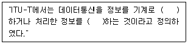
- 처리, 전송
- 처리, 기억
- 전송, 기억
- 제어, 통신
(정답률: 알수없음)
87. 비동기 전송모드(ATM)에 관한 설명으로 적합하지 않은 것은?
- ATM은 B-ISDN의 핵심 기술이다.
- 디지털 정보를 다중 전송하는 방식이다.
- 정보는 셀(Cell) 단위로 나누어 전송된다.
- 저속 대용량 통신망에 적합하다.
(정답률: 알수없음)
88. 다음 중 OSI 참조모델의 가장 하위계층은?
- 응용계층
- 표현계층
- 세션계층
- 데이터링크계층
(정답률: 알수없음)
89. 원거리에서 일괄처리하는 시스템의 터미널은?
- 인텔리전트 터미널
- 더미(Dummy) 터미널
- 리모트 배치 터미널
- 키보드 터미널
(정답률: 알수없음)
90. 데이터전송시스템의 전송로에는 아날로그 방식과 디지털방식이 있다. 디지털전송로에 대한 설명 중 틀린 것은?
- 신호변환기로 변복조장치(MODEM)를 사용한다.
- 패킷전송방식이 주로 이용된다.
- 전송매체는 M/W, 광케이블, UTP케이블 등이 있다.
- 국과 국간의 전송로는 디지털방식으로 구성된다.
(정답률: 알수없음)
91. 다음 중 뉴미디어의 특징이라고 볼 수 없는 사항은?
- 단방향성
- 네트워크화
- 분산적
- 특정 다수자
(정답률: 알수없음)
92. 다음 중 전송제어와 오류관리를 위한 제어정보를 포함하는 프로토콜의 기본적 요소는?
- Syntax
- Semantics
- Timing
- Synchronize
(정답률: 알수없음)
93. 통신 프로토콜에서 실체(entity)에 해당되지 않는 것은?
- 사용자 응용프로그램
- 파일전송 패키지
- DB 관리 시스템
- 인터페이스 H/W 장치
(정답률: 알수없음)
94. 몇 개의 터미널들이 하나의 통신회선을 통하여 결합된 형태로 신호를 전송하고 이를 수신측에서 다시 몇 개의 터미널의 신호로 분리하여 컴퓨터에 입력할 수 있도록 하는 것은?
- 디지털 서비스 유니트(DSU)
- 변복조기(MODEM)
- 채널 서비스 유니트(CSU)
- 다중화 장비(Multiplexer)
(정답률: 알수없음)
95. 데이터통신 시스템이 최초로 이용된 분야는?
- 사무자동화분야
- 군사분야
- 공장자동화분야
- 의료분야
(정답률: 알수없음)
96. 광대역 ISDN 서비스의 특징으로 가장 거리가 먼 것은?
- 신호의 전송 속도가 매우 높다.
- 서비스 신호 대역폭의 분포 범위가 넓다.
- 연속성 신호와 군집성 신호가 공존한다.
- 서비스 시간의 범위가 좁다.
(정답률: 알수없음)
97. 비동기식 전송방식에서 쓰이지 않는 Stop bit의 수는?
 bit
bit- 1 bit
 bit
bit- 2 bit
(정답률: 알수없음)
98. 다음 프로토콜 전송 방식 중 특정한 플래그를 정보메시지의 처음과 끝에 포함시켜 전송하는 방식은?
- 비트방식
- 문자방식
- 바이트방식
- 워드방식
(정답률: 알수없음)
99. 데이터통신의 일반적인 정의에 대한 내용으로 포함하기가 부적합한 것은?
- 정보기기 사이에서 디지틀 신호형태로 표현된 정보를 송수신하는 통신
- 정보처리장치 등에 의하여 처리된 정보를 전송하는 통신으로 기계장치간의 통신
- 아날로그 신호형태인 음성을 목적으로 하는 통신
- 전기통신회선을 이용, 회선에 입.출력장치를 접속해서 정보를 송수신하는 통신
(정답률: 알수없음)
100. 다음 정보통신시스템의 구성 요소 중 그 기능이 다르게 표현된 것은?
- DTE : 입출력제어 및 송수신 제어기능 수행
- DCE : 전송된 데이터를 저장, 처리기능 수행
- CCU : 전송오류검출, 회선감시등과 같은 통신제어기능을 수행
- 전송회선 : 전송신호를 송수신하기 위한 통로
(정답률: 알수없음)